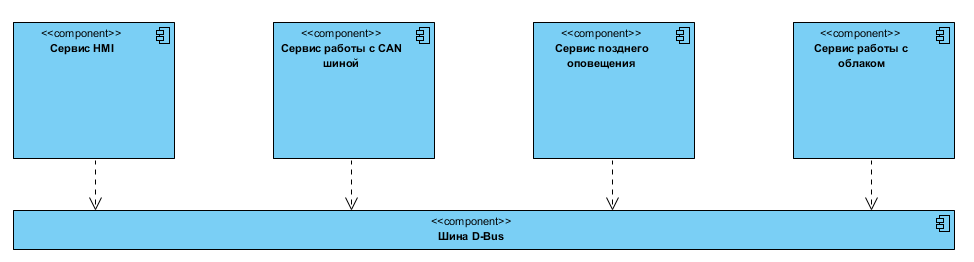
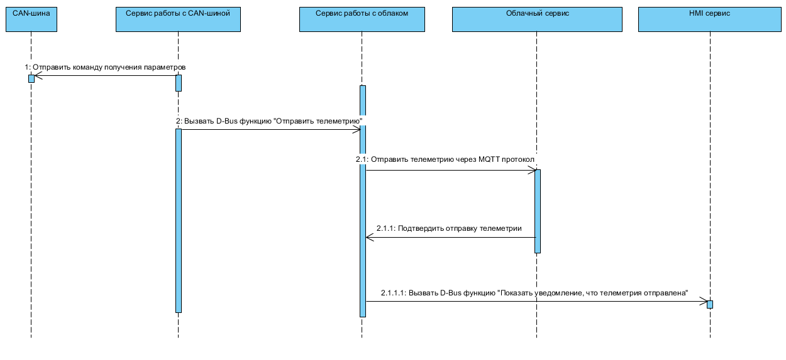
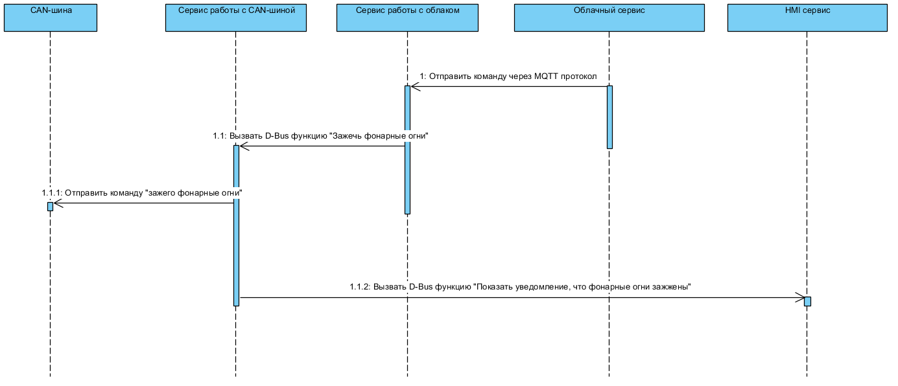

ИССЛЕДОВАНИЕ И ПРИМЕНЕНИЕ МИКРОСЕРВИСНОЙ АРХИТЕКТУРЫ В СФЕРЕ AUTOMOTIVE
Бракк Д.О.
AUTOMOTIVE SOFTWARE
- сложные комплексные бортовые системы
- высокие требования к отказоустойчивости
- неоднородный характер подсистем
- высокая стоимость разработки и поддержки
- закрытый исходный код
- закрытая инфраструктура
Проблемы
- отсутсвие стандартов архитектуры
- закрытый исходный код
- сложно применить мультикомандный подход
Актуальность работы
Запрос на исследование и создание прозрачной, эффективной и доступной архитектуры программного обеспечения для бортовых компьютеров всё ещё актуален.
Цель работы
- исследование концепции микросервисной архитектуры в сфере автомобильной промышленности
- создание базового прототипа программного решения на основе данной концепции
Научная новиза работы
концепция архитектуры, которая позволит
- уменьшить скорость разработки
- увеличить отказоустойчивость
- предоставить конечную прозрачную архитектуру организации логических компонентов
Встраиваемые системы в Automotive
- QNX
- Android
- Linux Embedded
Yocto Linux
- концепция слоёв
- независимость от платформы
- высокоуровневые инструменты сборки
Схема процесса сборки Yocto Linux

Понятие процесса
- программа
- сервис
- микросервис
Микросервисная архитектура
- изоляция зоны ответственности
- инкапсуляция кодовой базы
- однородный характер разработки
Шина сообщений
Единый интерфейс взаимодействия микросервисов.
Шина сообщений
- D-Bus
- NATS
Базовые подсистемы бортового компьютера
- HMI
- подсистема работы с датчиками и механическими системами автомобиля
- подсистема позднего оповещения
- подсистема реагирования на окружающую среду
- подсистема блокировки и разблокировки
- интеграция с мобильными устройствами
- подсистема работы с облачным сервисом
Пример схемы микросервисов
Схема: бортовой компьютер - облако
Схема: облако - бортовой компьютер
Automotive и Интернет вещей
MQTT
- двунаправленная связь: Pub/Sub
- тонкий клиент
- быстрее Websocket
- минимальная нагрузка метаданных пакета
Прототип предложенной концепции
Микросервисы бортового компьютера
- HMI
- Сервис получения телеметрии
- Сервис шлюза с IoT на базе MQTT протокола
Human Machine Interface
- C++14
- Qt Quick
- Boot2Qt Yocto Layer
- NATS C++ Library
Сервис получения телеметрии
- Golang ARM
- Golang NATS Library
Сервис шлюза работы с интернетом вещей на базе MQTT протокола
- Golang ARM
- Golang NATS Library
- Eclipse MQTT Paho Implementation
Прототип облака
- Websocket server: Golang
- MQTT client: Golang
- NATS
- Front-end: React.js/Redux.js
Результаты работы
- была сформулирована основная концепция архитектуры микросервисов
- было обосновано использование протокола MQTT для организации шлюза взаимодействия с «интернетом вещей»
- рабочий прототип бортового компьютера на базе микросервисов